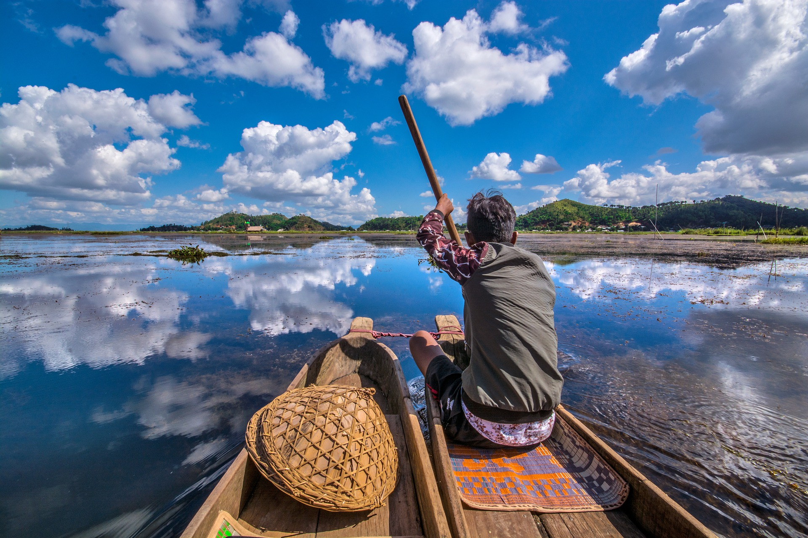

Northeast India consists of seven states also known as the “Seven Sisters of India". The ‘Seven Sisters States’ comprises of Manipur, Mizoram, Assam, Tripura, Meghalaya, Arunachal Pradesh and Nagaland. These seven sister states are an excellent choice for a vacation destination for all the nature lovers and to help them explore the untouched and undiscovered beauty of Northeast India.
This place is probably one of the most wondrous, gorgeous, and naturally rich and least explored regions in India. These seven states are bestowed with some spellbinding landscape and scenic surroundings. The “Seven Sisters of India" boast of many scenic, surreal, and spectacular places ranging from its lofty hills, gorgeous valleys, sparkling lakes, rivers, waterfalls, and even also its dense forests. So to help you choose your vacation spots we are here with the seven places of the Seven Sister that are just perfect for an impeccable Seven Sisters of India tour.
While visiting Assam you should never ever miss seeing the Kaziranga National Forest. It is one of the most popular and beautiful places of seven sisters of India in Assam. Kaziranga is a declared World Heritage Site and is home to one-horned rhinos. It is surrounded by aromatic plush green tea gardens and one can always enjoy jeep safaris in the forest and spot elephants, rhinos, tigers, deer, and numerous birds.
The best time to visit is in between the months of November to April
Kohima is located in the state of Nagaland. This place a cool weather during winters which makes it amazing for a visit during winter season. This place is one of the most tranquil & mesmeric places in seven sisters of northeast India because of the gorgeous Japfu range in the background. The travellers visiting here are overwhelmed by the thick forests, luxuriant valleys, and misty weather. These makes this place a heavenly spot for all the nature lovers. One can also take a trek to Dzuko valley, visit Kohima war cemetery, or even enjoy the Ntangki Wildlife sanctuary, and Mokokchung.
The best time to visit is in between the months of October to May
Tawang is a place which can make you feel like you are in heaven even on Earth. Tawang is an awesome place and is popular for a vintage monastery Tawang Monastery in Arunachal Pradesh is a 17th century monastery nestled on top of a hill and is located by the sparkling Tawang Chu River. This monastery showcases traits and traditions of Tibetan culture and ethos and displays rich culture and traditions of the state. This three-storied building has several monks living inside and a big library. All your tiredness is washed away because of the relaxing views that you witness here. You simply can’t miss out on visiting this one when in Tawang.
The best time to visit is in between the months of March to October
Imphal is the capital of Manipur and this place is one of the top educational hubs among all the capitals of Seven Sisters of India. Imphal is a place full of meandering rivers, lush green valleys, lakes and misty mountains which makes it one of the most gorgeous places of the Seven Sisters States. Loktak Lake is the largest freshwater lake in India and it offers captivating beauty to the tourists while the heritage Kangla Fort showcases rich culture and history of the bygone days for the historians.
The best time to visit is in between the months of September to April

Champai is an offbeat and serene town, is located in the state of Mizoram. This place is also famously known as the Rice Bowl of Mizoram because of the lush green fields of rice which are done in step – farming method. It also boast of Tiau Lui River, Rih Dil Lake, and Kungawrhi National Park. This scenic and quaint hill station is one of the most beautiful places in the northeast which makes Champai a delight for all the travellers and a perfect vacation destination.
The best time to visit is in between the months of November to March
Agartala is the capital of Tripura which is the smallest state in the Seven Sisters of India map .But being the smallest state does not reduces its beauty even by an inch. Agartala is one of the most fascinating places of Tripura. It is rich in natural wonders and is also home to many native tribes, heritage monuments and various historic temples. If you are visiting or exploring Agartala you should definitely make plans to visit Ujjayanta Palace, Kamalasagar, Neermahal Palace, Gandacherra Wildlife Sanctuary, and Kalapania Nature Park.
The best time to visit is in between the months of December to March
The beauty awaits- Shillong in Meghalaya is just an ideal destination for travellers who are seeking peace and relaxation and try to be away from their busy life. Shillong is a mesmerizing town which is surrounded by hillock and with wondrous and beautiful landmarks because of this Shillong is very rightly described as ‘Scotland of East’. The heart of the city has the Umaim Lake where you can go for boating and also Shillong has lush green hills for nature lovers, winding roads which are perfect for road trip lovers, cascading waterfalls for the adventurous ones and also delicious Tibetan food for all the foodies. One can always visit Cherrapunji to relish its stunning view from Shillong Peak.
The best time to visit is in between the months of April to June
These seven places truly portray the beauty of the Seven Sisters. One visit for a vacation here could change one’s perspective about North-east completely. We hope that we were able to provide you with some of the amazing vacation destinations located in the seven sisters.
Wanna reach out to us?